NCERT Solutions For Class 12 Chemistry Chapter 10 Haloalkanes and Haloarenes
Topics and Subtopics in NCERT Solutions for Class 12 Chemistry Chapter 10 Haloalkanes and Haloarenes:
| Section Name | Topic Name |
| 10 | Haloalkanes and Haloarenes |
| 10.1 | Classification |
| 10.2 | Nomenclature |
| 10.3 | Nature of C–X Bond |
| 10.4 | Methods of Preparation of Haloalkanes |
| 10.5 | Preparation of Haloarenes |
| 10.6 | Physical Properties |
| 10.7 | Chemical Reactions |
NCERT Solutions CBSE Sample Papers ChemistryClass 12 Chemistry
NCERT IN TEXT QUESTIONS
10.1 Write structures of the following compounds:
(i) 2-Chloro-3-methylpentane
(ii) 1-Chloro-4-ethylcydohexane
(iii) 4-tert. Butyl-3-iodoheptane
(iv) 1,4-Dibromobut-2-ene
(v) 1-Bromo-4-sec. butyl-2-methylbenzene.
Ans:
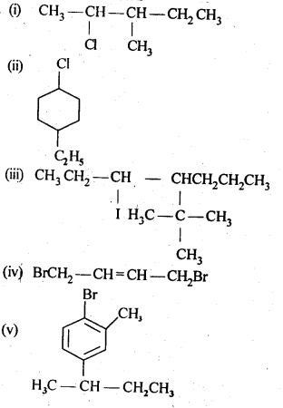
10.2. Why is sulphuric acid not used during the reaction of alcohols with KI?
Ans: KI is expected to give HI on reacting with H2SO4 which will convert alcohols (R – OH) to alkyl iodides (R – I). However, H2SO4 is a strong oxidising agent and it oxidises HI formed during the reaction to I2 which does not react with alcohol.
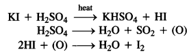
To solve the problem, H2S04 is replaced by phosphoric acid (H3P04) which provides HI for the reaction and does not give I2 as is done by H2S04.
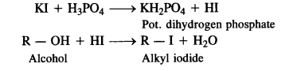
10.3. Write structures of different dihalogen derivatives of propane.
Ans: Four isomers are possible. These are :
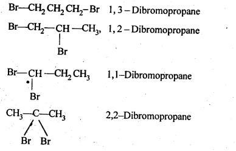
10.4. Among the isomeric alkanes of mdlecular formula C5H12, identify the one that on photochemical chlorination yields
(i) A single monochloride.
(ii) Three isomeric monochlorides.
(iii) Four isomeric monochlorides.
Ans:
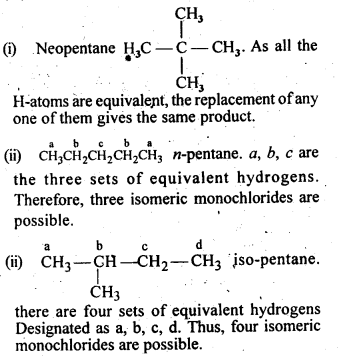
10.5. Draw the structures of major monohalo products in each of the following reactions:
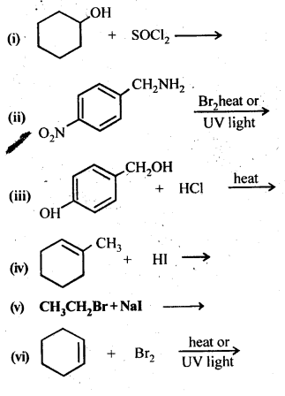
Ans:
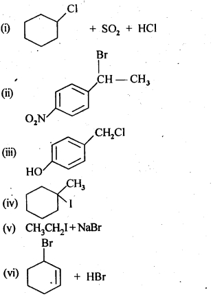
10.6. Arrange each set of compounds in order of increasing boiling points :
(i) Bromomethane, bromoform, chloromethane, dibromomethane
(ii) 1- Chloropropane, isopropylchloride, 1- chlorobutane.
Ans:
(i) The boiling points of organic compounds are linked with the van der Waals’ forces of attraction which depend upon the molecular size. In the present case, all the compounds contain only one carbon atom. The molecular size depends upon size of the halogen atom and also upon the number of halogen atoms present in different molecules. The increasing order of boiling points is :
CH3Cl(chloromethane) < CH3Br (bromomethane) < CH2Br2 (dibromomethane) < CHBr3 (bromoform)
(ii) The same criteria is followed in this case. We all know that the branching of the carbon atom chain decreases the size of the isomer and this decreases its boiling point as compared to straight chain isomer. The increasing order of boiling point is :
(CH3)2CHCl (isopropylchloride or 2-chloropropane) < ClCH2CH2CH3 (1-chloropropane) < ClCH2CH2CH2CH3 (1-chlorobutane)
10.7. Which alkyl halide from the following pairs would you expect to react more rapidly by an SN2 mechanism? Explain your answer.
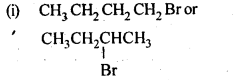
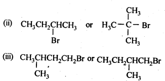
Ans: In SN2 mechanism, reactivity depends upon the steric hindrance around the C-atom carrying the halogen. Lesser the steric hindrance, faster the reaction.

10.8. In the following pairs of halogen compounds, which compound undergoes faster SN1 reaction?
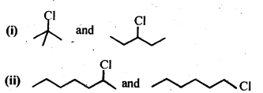
Ans:
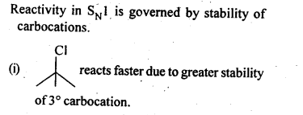
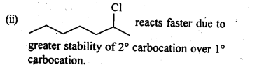
10.9. Identify A, B, C, D, E, R and R1 in the following:
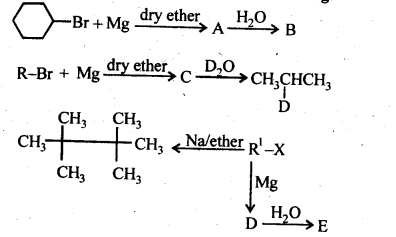
Ans:
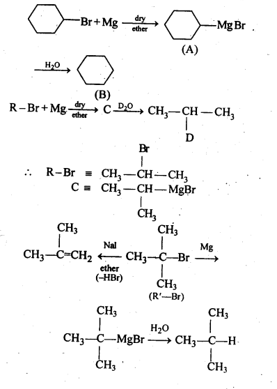
10.10. A hydrocarbon C5H10 does not react with chlorine in dark but gives a single monochloro compound C5H9Cl in bright sunlight. Identify the hydrocarbon.
Ans: The hydrocarbon with molecular formula C5H10 can either a cycloalkane or an alkene. Since the compound does not react with Cl2 in the dark, therefore it cannot be an alkene but must be a cycloalkane. Since the cycloalkane reacts with Cl2 in the presence of bright sunlight to give a single monochloro compound, C5H9Cl, therefore, all the ten hydrogen atoms of the cycloalkanes must be equivalent. Thus, the cycloalkane is cyclopentane.
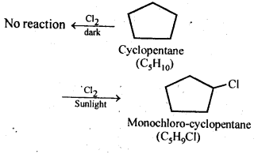
NCERT EXERCISES
10.1. Name the following halides according to the IUPAC system and classify them as alkyl, allyl, benzyl (primary, secondary, tertiary), vinyl, or aryl halides:
(i)(CH3)2CHCH(Cl)CH3
(ii) CH3CH2CH(CH3)CH(C2H5)CI
(iii) CH3CH2C(CH3)2CH2I
(iv)(CH3)3CCH2CH(Br)C6H5
(v)CH3CH(CH3)CH(Br)CH3
(vi)CH3C(C2H5)2CH2Br
(vii)CH3C(Cl)(C2H5)CH2CH3
(viii)CH3CH=C(CI)CH2CH(CH3)2
(ix)CH3CH=CHC(Br)(CH3)2
(x)P-CIC6H4CH2CH(CH3)2
(xi)m-ClCH2C6H4CH2C(CH3)3
(xii)o-Br -C6H4CH (CH3)CH2CH3
Ans: (i) 2-Chloro-3methylbutane, 2° alkyl halide
(ii) 3-Chloro-4methyl hexane, 2° alkyl halide
(iii) 1 -Iodo-2,2-dimethylbutane, 1 ° alkyl halide
(iv) l-Bromo-3, 3-dimethyl -1-phenylbutane, 2° benzylic halide
(v) 2-Bromo-3-methylbutane, 2° alkyl halide
(vi) 1-Bromo-2-ethyI-2-methylbutane, 1° alkyl halide
(vii)3-Chloro-3-methylpentane, 3° alkyl halide
(viii) 3-Chloro-5-methylhex-2-ene, vinylic halide
(ix)4-Bromo-4-methylpent-2-ene, allylic halide
(x)1-Chloro-4-(2-methylpropyl) benzene, aryl halide
(xi)1-Chloromethyl-3- (2,2-dimethylpropyl) benzene, 1 ° benzylic halide.
(xii)1-Bromo-2-(l-methylpropyl) benzene,aryl halide.
10.2. Give the IUPAC names of the following compounds:
(i) CH3CH(CI)CH (Br)CH3 (ii) CHF2CBrCIF (iii) CICH2C=CCH2Br (iv) (CCl3)3CCl
(v)CH3C(p-ClC6H4)2CH(Br)CH3 (vi)(CH3)3CCH=C(CI)C6H4I -p
Ans: (i) 2-Bromo-3-chlorobutane
(ii) 1 JBromo-1 -chloro-1,2,2-trifluoroethane
(iii) l-Bromo-4-chlorobut-2-yne
(iv)2-(Trichloromethyl)-l, 1,1,2,3,3,3- heptachloropropane
(v)2-Bromo-3,3-bis-(4-chlorophenyl) butane
(vi)l-Chloro-l-(4-iodophenyl)-3,3- dimethylbut-l-ene.
10.3. Write the structures of the following organic halogen compounds:
(i)2-ChIoro-3-methylpentane
(ii)p-Bromochlorobenzene
(iii)l-Chloro-4-ethylcyclohexane
(iv)2r (2-Chlorophenyl) -1- iodooctane
(v)2-Bromobutane
(vi)4-tert-Butyl-3-iodoheptane
(vii)1-Bromo-4-sec-butyl-2-methylbenzene
(viii)1,4-Dibromobut-2-ene
Ans:
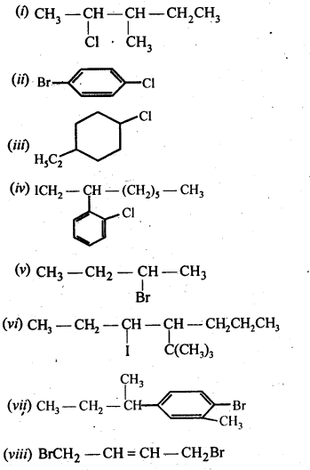
10.4. Which one of the following has the highest dipole moment?
(i)CH3CI2 (ii) CHCl3 (iii) CCI4
Ans: The three dimensional structures of the three compounds along with the direction of dipole moment in each of their bonds are given below:
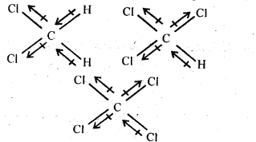
CCl4 being symmetrical has zero dipole moment. In CHCl3, the resultant of two C – Cl dipole moments is opposed by the resultant of C – H and C – Cl bonds. Since the dipole moment of latter resultant is expected to be smaller than the former, CHCl3 has a finite dipole (1.03 D) moment.
In CH2CI2, the resultant of two C – Cl dipole moments is reinforced by resultant of two C – H dipoles, therefore, CH2CI2 (1 .62 D) has a dipole moment higher than that of CHCl3. Thus, CH2CI2 has highest dipole moment.
10.5. A hydrocarbon C5H10 does not react with chlorine in dark but gives a single monochloro compound C5H9CI in bright sunlight. Identify the hydrocarbon.
Ans: The hydrocarbon with molecular formula C5H, 0 can either a cycloalkane or an alkene.
Since the compound does not react with Cl2 in the dark, therefore it cannot be an alkene but must be a cycloalkane. Since the cycloalkane reacts with Cl2 in the presence of bright sunlight to give a single monochloro compound, C5H9Cl, therefore, all the ten hydrogen atoms of the cycloalkanes must be equivalent. Thus, the cycloalkane is cyclopentane.

10.6. Write the isomers of the compound having formula C4H9Br.
Ans:
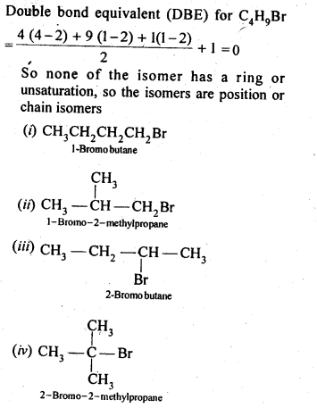
10.7. Write the equations for the preparation of 1-iodoobutanefrom (i)1-butanol (ii)1-chlorobutane (iii) but-l-ene.
Ans:
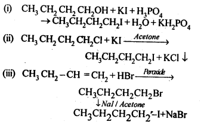
10.8. What are ambident nucleophiles ? Explain with an example.
Ans: Nucleophiles which can attack through two different sites are called ambident nucleophiles. For example, cyanide ion is a resonance hybrid of the following two structures:
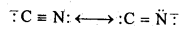
It can attack through carbon to form cyanide and through N to form is O cyanide.
10.9. Which compound in each of the following-pairs . will react faster in SN2 reaction with -OH? (i)CH3Br or CH3I
(ii)(CH3)3CCl or CH3Cl
Ans: (i)Since I– ion is a better leaving group than Br- ion, therefore, CH3I reacts faster CH3Br in SN2 reaction with OH– ion.
(ii)On steric grounds, 1° alkyl halides are more reactive than tert-alkyl halides in SN2 reactions. Therefore, CH3CI will react at a faster rate than (CH3)3CCl in a SN2 reaction with OH– ion.
10.10. Predict all the alkenes that would be formed by dehydrohalogenation of the following halides with sodium ethoxide in ethanol and identify the major alkene:
(I) 1-Bromo-l-methylcyclohexane
(ii) 2-Chloro-2-methylbutane.
(iii) 2,2,3-Trimethyl-3-bromopentane.
Ans:

10.11. How will you bring about the following conversions?
(I) Ethanol to but-l-yne.
(ii) Ethane to bromoethene
(iii) Propene to 1-nitropropane
(iv) Toluene to benzyl alcohol
(v) Propene to propyne
(vi) Ethanol to ethyl fluoride
(vii) Bromomethane to propanone
(viii) But-l-ene to but-2-ene
(ix) 1-Chlorobutane to n-octane
(x) Benzene to biphenyl
Ans:
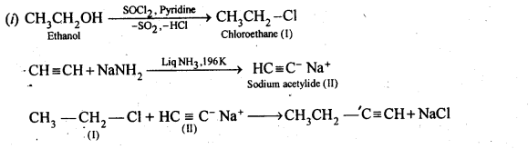
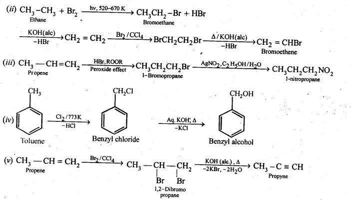
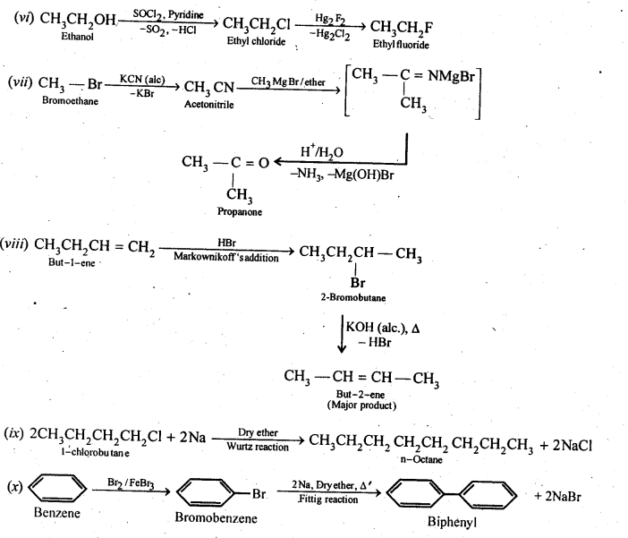
10.12. Explain why
(i) the dipole moment of chlorobenzene is lower than that of cyclohexyl chloride?
(ii) alkyl halides, though polar, are immiscible with water?
(iii) Grignard reagents should be prepared under anhydrous conditions?
Ans: (i) sp2-hybrid carbon in chlorobenzene is more electronegative than a sp3-hybrid carbon in cyclohexylchloride, due to greater s-character. Thus, C atom of chlorobenzene has less tendency to release electrons to Cl than carbon atom of cyclohexylchloride.
As a result, C – Cl bond in chlorobenzene is less polar than in cyclohexylchloride. Further, due to delocalization of lone pairs of electrons of the Cl atom over the benzene ring, C-Cl bond in chlorobenzene acquires some double bond character while the C – Cl in cyclohexy! chloride is a pure single bond. In other words, C-Cl bond in chlorobenzene is shorter than in cyclohexyl chloride.
Since dipole moment is a product of charge and distance, therefore, chlorobenzene has lower dipole moment than cyclohexylchloride due to lower magnitude of negative charge on the Cl atom and shorter C-Cl distance.
(ii) Alkyl halides are polar molecules, therefore, their molecules are held together by dipole-dipole attraction. The molecules of H2O are hold together by H-bonds. Since the new forces of attraction between water and alkyl halide molecules are weaker than the forces of attraction already existing between alkyl halide – alkyl halide molecules and water-water molecules, thefefore, alkyl halides are immiscible (not soluble) in water. Alkyl halide are neither able to form H- bonds with water nor are able to break the H-bounding network of water.
(iii)Grignard reagents are very reactive. They react with moisture present in the apparatus to form alkanes
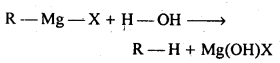
Thus, Grignard reagents must be prepared under anhydrous conditions.
10.13. Give the uses of freon 12, DDT, carbon tetrachloride, and iodoform.
Ans: Iodoform: It was earlier used as an antiseptic but the antiseptic properties are due to the liberation of free iodine and not due to iodoform itself. Due to its objectionable smell, it has been replaced by other formulations containing iodine.
Carbon tetrachloride:
Uses:
(i)As an industrial solvent for oil, fats, resins etc.and also in dry cleaning.
(ii)CCl4 vapours are highly non-inflammable, thus CCl4 is used as a fire extinguisher under the name pyrene.
(iii)Used in the manufacture of refrigerants and propellants for aerosol cans.
Freons: Freon-12 (CCl2F2) is most common freons in industrial use.
Uses: For aerosol propellants, refrigeration, and air conditioning purposes.
DDT (p -p’ – Dichloro diphenyl – trichloro ethane):
(i)The use of DDT increased enormously on a worldwide basis after World War II, primarily because of its effectiveness against the mosquitoes that spreads malaria and other insects which damages crops.
(ii) However, problems related to extensive use of DDT began to appear in the late 1940 s. Many species of insects developed resistance to DDT, it was also discovered to have a high toxicity towards fishes. DDT is not metabolised very rapidly by animals, instead, it is deposited and stored in the fatty tissues. If the ingestion continues at a steady rate, DDT builds up within the animal’s overtime.
10.14. Write the structure of the major organic product in each of the following reactions:
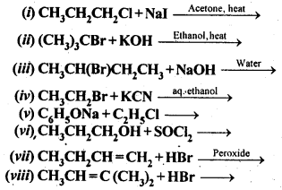
Ans:
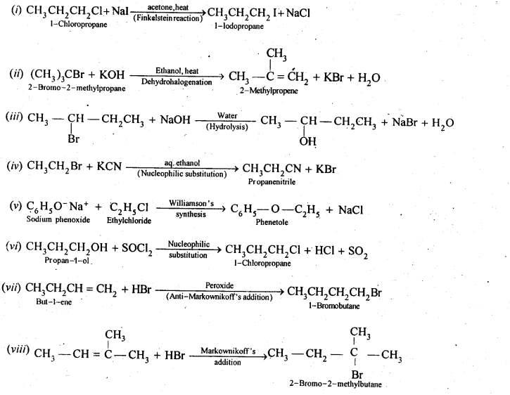
10.15. Write the mechanism of the following reaction:
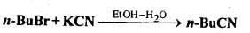
Ans: KCN is a resonance hybrid of the following two contributing structures:
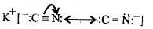
Thus, CN– ion is an ambident nucleophile. Therefore, it can attack the “carbon atom of C-Br bond in n-BuBr either through C or N. Since C – C bond is stronger than C – N bond, therefore, attack occurs through C to form n-butyl cyanide.
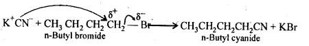
10.16. Arrange the compounds of each set in order of reactivity towards SN2 displacement:
(i) 2-Bromo-2-methyibutane, 1-Bromopentane, 2-Bromopentane.
(ii) l-Bromo-3-methyIbutane, 2-Bromo-2-methylbutane, 3-Bromo-2-methylbutane.
(iii) 1-Bromobutane, l-Bromo-2,2-dimethylpropane, l-Bromo-2-methylbutane, l-Bromo-3-methyl butane.
Ans: The SN2 reactions reactivity depends upon steric hindrance. More the steric hindrance slower the reaction.Thus the order of reactivity will be 1°> 2° >3°
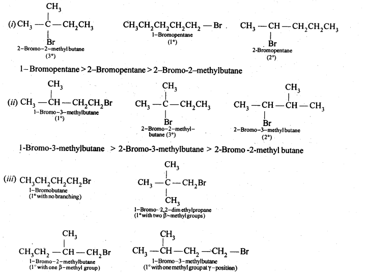
Since in case of 1° alkyl halides steric hindrance increases in the order) n-alkyl halides, alkyl halides with a substituent at any position other than the β-position, one substituent at the β-position, two substituents at the β-position, therefore, the reactivity decreases in the same order. Thus, the reactivity of the given alkyl bromides decreases in the order:
1-Bromobutane > l-Bromo-3-methylbutane > l-Bromo-2-methyjbutane> 1-Bromo-2,2-dimethyl propane.
10.17. Out of C6H5CH2Cl and C6H5CHCIC6H5which is more easily hydrolysed by aqueous KOH.
Ans: C6H5CH2Cl is 10 aryl halide while C6H5CH(CI)C6H5 is a 2° aryl halide. In SN1 reactions, the reactivity depends upon the stability of carbocations.
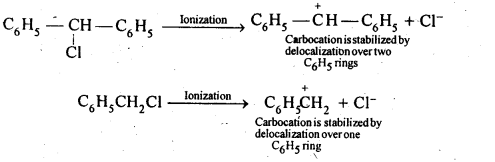
Since the C6H5CHC6H5carbocation is more stable than C6H5CH2 carbocation, therefore,C6H5CHCIC6H5 gets hydrolysed more easily than C6H5CH2Cl under SN1 conditions. However, under SN2 conditions, the reactivity depends on steric hindrance, therefore, under SN2 conditions,C6H5CH2Cl gets hydrolysed more easily than C6H5CHClC6H5.
10.18. p-dichlorobenzene has higher m.p. and lesser solubility than those of o-and m-isomers. Discuss. (C.B.S.E. Delhi 2013)
Ans: The three isomers are position isomers which differ in the relative positions of the chlorine atoms in the ring :
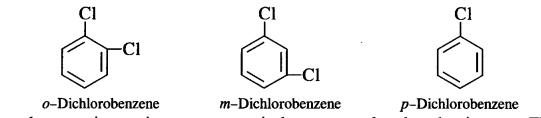
As we know, p-isomer is more symmetrical as compared to the other isomers. This means that in the crystal lattice, molecules of the p-isomers are more closely packed as compared to the other isomers. As a result, it has a higher melting point and lower solubility as compared to ortho and meta isomers.
Haloarenes are less polar than haloalkanes and are insoluble in water. This is because of lack of hydrogen bonding. As a result, the attractive forces in haloarenes—water system remain less than the attractive forces in H20 molecules which are hydrogen bonded. Haloarenes are soluble in organic solvents of low polarity such as benzene, ether, chloroform, carbon tetrachioride etc.
10.19. How the following conversions can be carried out:
(i) Propene to propan-l-ol (ii) Ethanol to but-l-yne
(iii) l-Bromopropane to 2-bromopropane (iv) Toluene to benzyl alcohol
(v)Benzene to 4-bromonitrobenzene (vi) Benzyl alcohol to 2-phenylethanoic acid
(vii)Ethanol to propanenitrile (viii) Aniline to chlorobenzene
(ix)2-Chlorobutane to 3,4-dimethylhexane (x) 2-Methyl-1 -propene to 2-chk>ro-2-methylpropane.
(xi)Ethyl chloride to propanoic acid (xii) But-1-ene to n-butyliodide
(xiii)2-Chlropropane to 1-propanol (xiv) Isopropyl alcohol to iodoform
(xv)Chlorobenzene to p-nitrophenol (xvi) 2-Bromopropane to 1-bromopropane
(xvii)Chloroethane to butane , (xviii) Benzene to diphenyl
(xix) tert-Butyl bromide to isobutyl bromide (xx) Aniline to phenylisocyanide
Ans:
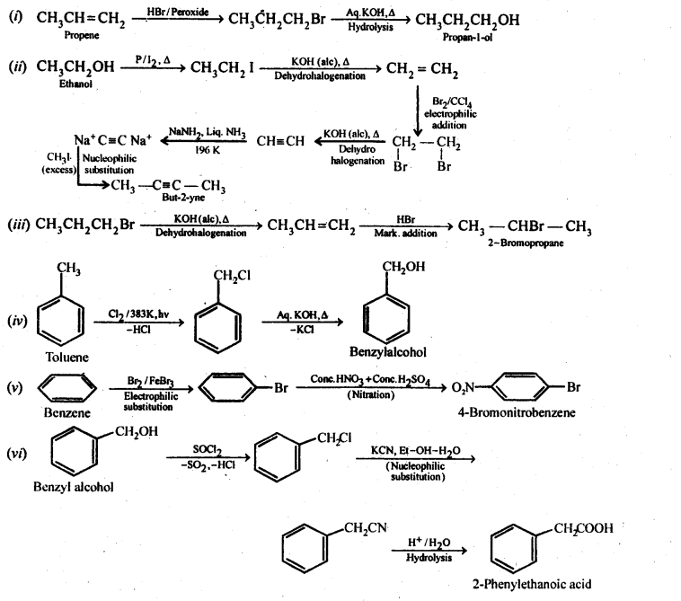
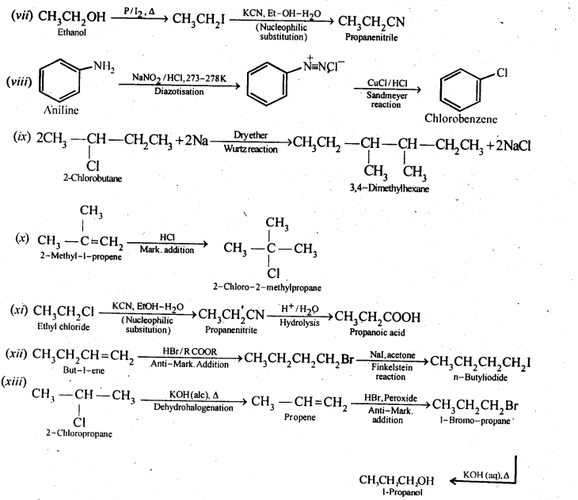
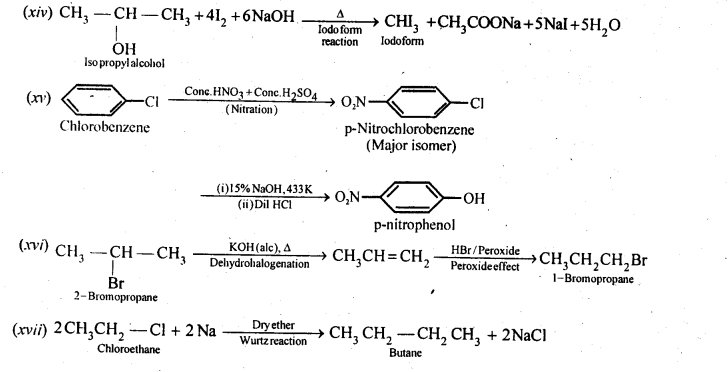
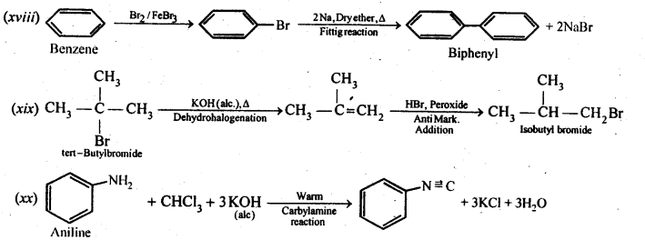
10.20. The treatment of alkyl chlorides with aqueous KOH leads to the formation of alcohols but in presence of alcoholic KOH, alkenes are major products. Explain. (Pb. Board 2009, Haryana Board 2013)
Answer:
In aqueous medium i.e., water, KOH will be completely dissociated to give OH– ions. They being a strong nucleophile, will bring about the substitution of alkyl halides to form alcohols. At the same time, the OH” ions will be highly hydrated also. They will not be able to abstract a proton (H+) from the p-carbon atom to form alkenes. In other words, in aqueous medium, OH– ions will behave as weak base and elimination leading to alkenes will not be feasible.
In alcoholic KOH, the solution will also contain ethoxide ions (C2H5O–) in addition to OH– ions. They being a stronger base than OH– ions, will abstract a H+ ion from the β-carbon atom giving alkene as the product as a result of dehydrohalogenation.
10.21. Primary alkyl halide C4H9Br (a) reacted with alcoholic KOH to give compound (b) Compound (b) is reacted, with HBr to give (c) which is an isomer of (a). When (a) is reacted with sodium metal it give compound (d), C8H18 which is different from the compound formed when n-butyl bromide is reacted with sodium. Give the structural formula of (a) and write the equations for all the reactions.
Ans: (i) There are two primary alkyl halides having the molecular formula, C4H9Br.
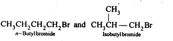
(ii) Since compound (a) when reacted with Na metal gave a compound (d) with molecular formula C8H18 which was different from die compound obtained when n-butyl bromide was reacted with Na metal, therefore, (a) must be isobutyl bromide and compound (d) must be 2,3-dimethylhexane.
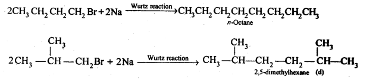
(iii) If compound (a) is isobutyl bromide, than the compound (b) which it gives on treatment with alcoholic KOH must be 2-methyl-1-propane.
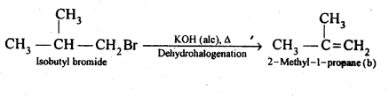
(iv) The compound (b) on treatment with HBr gives compound (c) in accordance with Markownikoff rule. Therefore, compound (c) is tert-butyl bromide which is an isomer of compound (a) ,i.e., isobutyl ‘ bromide.
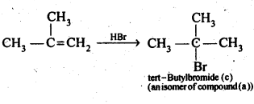
Thus
(a)is isobutyl bromide,
(b)is 2-methyl-1 -propane,
(c)is tert-butylbromide, and
(d)is 2,5-dimethylhexane.
10.22. What happens when .
(i) n-butyi chloride is treated with alcoholic KOH.
(ii) bromobenzene is treated with Mg in the presence of dry ether.
(iii) chlorobenzene is subjected to hydrolysis.
(iv) ethyl chloride is treated with aqueous. KOH.
(v) methyl bromide is treated with sodium in the presence of dry ether,
(vi) methyl chloride is treated with KCN.
Ans:
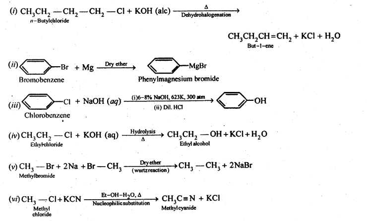
More Resources for CBSE Class 12: